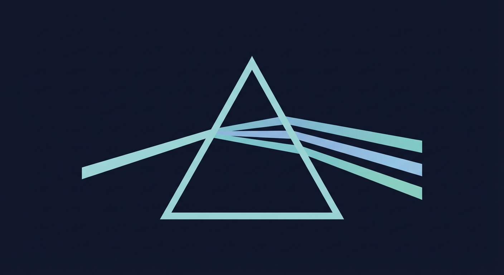

Soroban-First Block Explorer for Stellar — human-readable smart contracts, unified event streams, and complete ledger history from genesis.

Prism extends the Obsrvr Intelligence Console (Terminal) — an existing open-source block explorer — with full Soroban-first capabilities. Terminal already provides a contract-centric explorer with tiered hot/cold storage and real-time WebSocket streaming.
Prism adds the missing Soroban display layer: human-readable transactions via SEP-41 and SEP-50, CAP-67 event support with swap detection, and complete ledger history from Stellar genesis (all 61M+ ledgers).
SEP-41 and SEP-50 transform opaque XDR into plain language — "Swapped 100 USDC for 1,250 XLM via Soroswap."
Unified event stream combining classic effects and Soroban events. Filterable by contract, function call, event type, and token.
All 61M+ Stellar ledgers ingested via the Obsrvr Lake pipeline. Bronze layer (raw XDR) + Silver layer (transformed) backed by Stellar Galexie archives.
Unified interface for classic operations, SAC tokens, SEP-39, and Soroban smart contracts — complete ecosystem coverage.
Heuristic-based detection for major DEXes — Soroswap, Aquarius, Phoenix. Displays human-readable swap summaries with token pairs and amounts.
Pipeline, processors, API, and frontend — all published under a permissive license with contributing guidelines and CI/CD.
Tillman Mosley III — Currently maintains Radar (formerly stellarbeat) and two other Stellar ecosystem projects. Experience in data infrastructure and data ingestion.